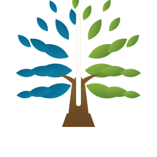

Keamanan lingkungan
Koordinasi jadwal ronda, akses tamu, dan respons cepat saat ada kejadian.

Sriwijaya RT/RWPemilihan lingkungan warga
Kenali kandidat RT dan RW untuk Cluster Sriwijaya, Perumahan Darmawangsa Bekasi.
Agenda
Pemilihan RT/RW 2026 Tanggal menunggu keputusan panitiaTentang halaman
Website ini dibuat sebagai pusat informasi netral agar warga bisa membaca visi, misi, pengalaman, dan program prioritas tiap kandidat sebelum menentukan pilihan.
Daftar kandidat
Gunakan filter wilayah untuk melihat profil kandidat RT dan RW.
Fokus warga
Daftar ini menjadi acuan umum untuk membaca arah program tiap kandidat.
Koordinasi jadwal ronda, akses tamu, dan respons cepat saat ada kejadian.
Informasi resmi yang rapi, tidak berulang, dan mudah ditelusuri kembali.
Perawatan taman, drainase, sampah, serta area bersama yang sering dipakai.
Surat pengantar, data warga, kas, dan dokumentasi kegiatan dibuat transparan.
Jadwal pemilihan
Tanggal resmi bisa disesuaikan setelah panitia menetapkan jadwal final.
Panduan pemilih
Panduan ini membantu warga memahami syarat, alur, dan aturan voting sebelum hari pemilihan.
Kontak panitia
Setelah daftar kandidat final tersedia, isi website tinggal diganti tanpa mengubah struktur halaman.